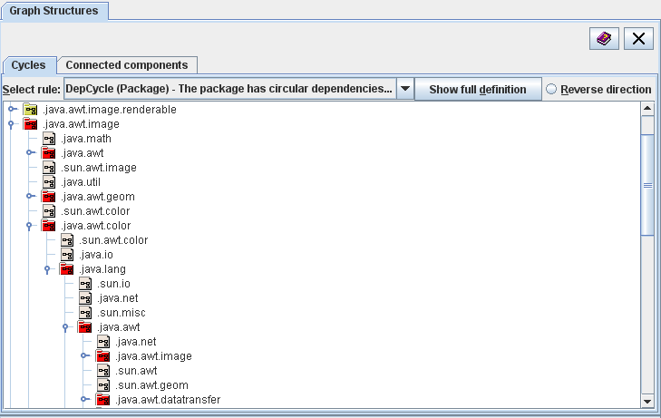

| Prev - Next - Down | SDMetrics - the UML design measurement tool |

Figure 18: Graph Structures View - Cycles
There is one graph for each design rule that checks for cycles. From the dropdown list at the top, you can select the design rule for which you want to show the cycles. Click the "Show full definition" button to open the definition of the rule in the measurement catalog (Section 4.13 "The View 'Catalog'").
The tree below initially shows all model elements that depend on at least one other model element. The type of model elements and nature of the dependencies are defined by the selected design rule. Expand the model elements to the see on which other elements they depend. The icon next to each model element indicates its cycle status:
Use the "Reverse direction" button in the upper right corner to switch to a new tree that reverses the direction of the dependencies. Expanding a model element e shows all model elements that depend on e.
| Prev | Up | Next |
| Section 4.11 "The View 'Graph Structures'" | Contents | Section 4.11.2 "Viewing Connected Components" |